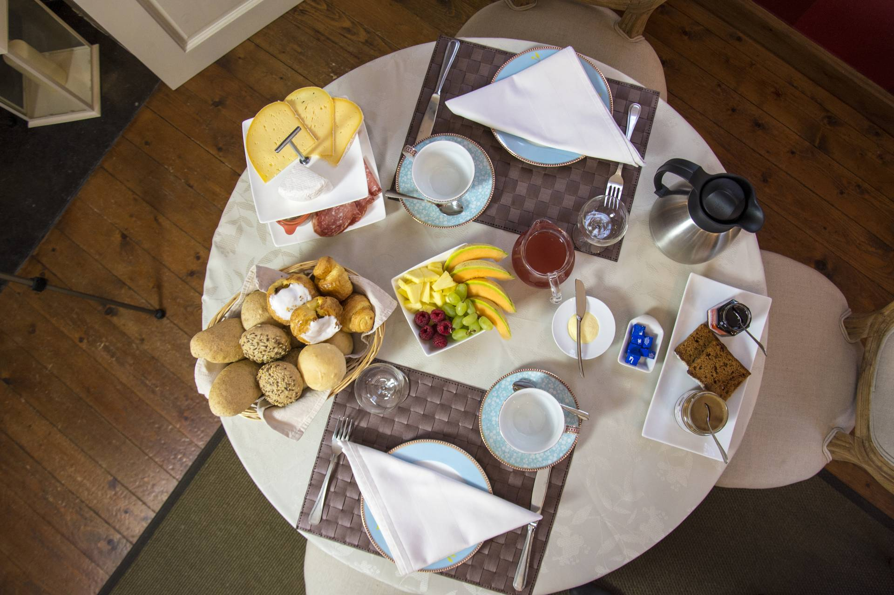
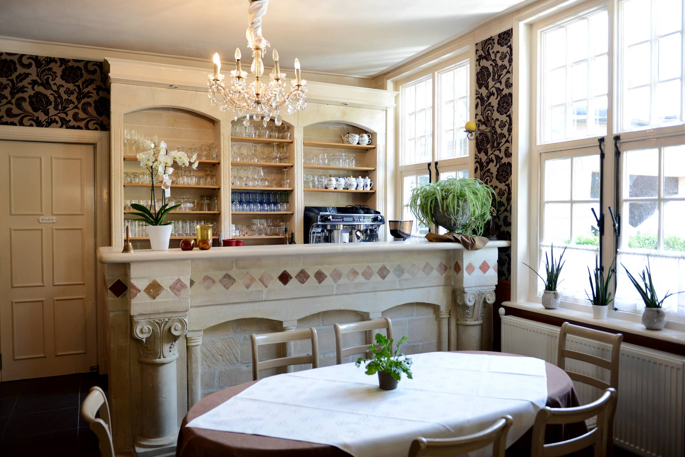
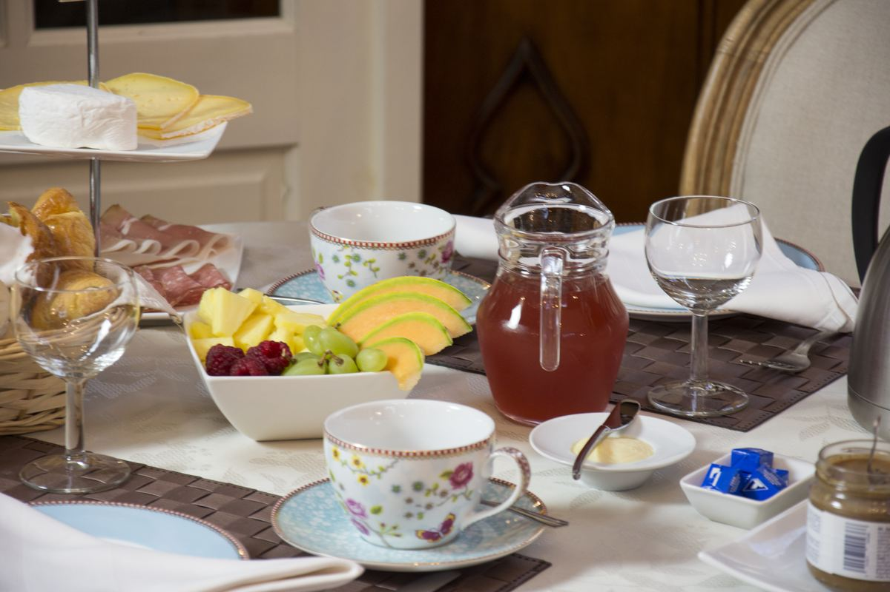
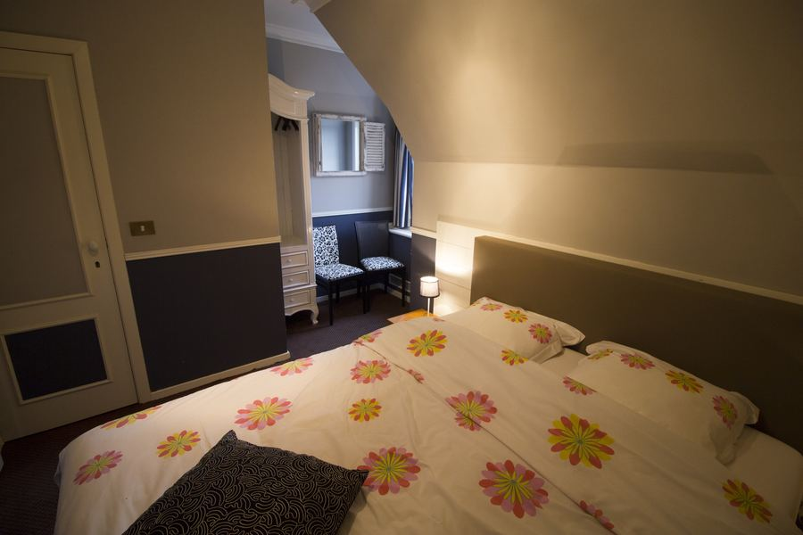
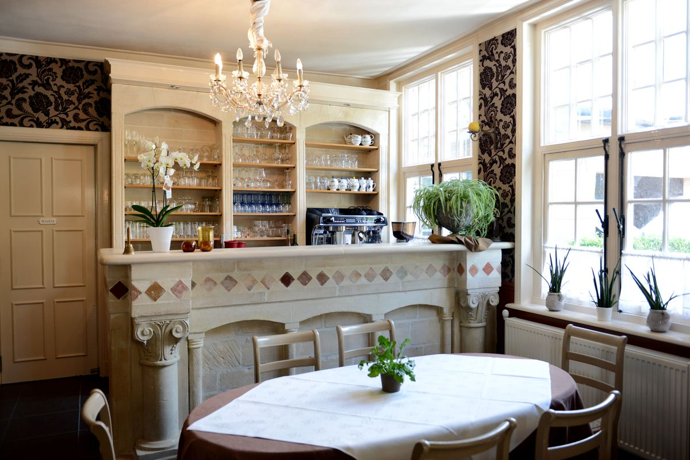

1e verdieping
1e verdiepingVermillion
Uitzicht op de kerktoren, twee eenpersoonsbedden.




Vijf kamers met elk hun eigen kleur, een uitgebreid ontbijt met streekproducten en de weidse IJzerbroeken vlak achter het dorp.
Vanaf €80 per nacht voor 1 persoon en €110 voor 2 personen, ontbijt inbegrepen

l'Heritage is een familiehuis aan de Dorpplaats van Reninge, in de vroegere kapelanij naast de kerk. Je slaapt in een klein, persoonlijk huis waar je 's avonds de stilte van de polder hoort en 's ochtends aanschuift aan een gedekte ontbijttafel.
Van hieruit wandel of fiets je zo de IJzerbroeken in, en ben je in een kwartier in Ieper, Poperinge of Diksmuide.
Elke kamer draagt de naam van haar kleur. Elke kamer heeft een eigen badkamertje met douche, toilet en lavabo. Het ontbijt is altijd inbegrepen; de prijs hangt af van het aantal personen en het aantal nachten.
Binnen vind je hoge plafonds, oude deuren, een kroonluchter hier en daar en behang met karakter. Een huis met een verleden, waar je meteen thuiskomt.
 1e verdieping
1e verdiepingUitzicht op de kerktoren, twee eenpersoonsbedden.
 1e verdieping
1e verdiepingOp het oosten, met de zonsopgang boven de IJzervlakte.
 1e verdieping
1e verdiepingAan de achterkant van het huis, de rustigste plek.

2e verdiepingKnus, met dakkapel en zicht over de IJzerbroeken.
 2e verdieping
2e verdiepingEen stille kamer onder het dak.
Het ontbijt is altijd inbegrepen. Blijf je maar één nacht, dan komt er €5 (1 persoon) of €10 (2 personen) bij.

Ook wie niet blijft slapen is welkom. Op het zonnige terras of bij de open haard bakken we verse pannenkoeken volgens het familierecept, en schenken we koffie voor fietsers en wandelaars die even willen uitblazen.
Een tussentijds verlof wordt steeds op voorhand aangekondigd in de zaak.
De Westhoek is vlak, groen en vol verhalen. Een paar tips van ons, op fiets- of korte autoafstand.
Natte weilanden langs de IJzer, met in de winter duizenden ganzen. Ideaal om te wandelen en vogels te kijken.
De Lakenhalle, het In Flanders Fields Museum en elke avond om 20 uur de Last Post onder de Menenpoort.
Hopstad met het Hopmuseum en Talbot House. Proef er de streek bij Goeste.
De IJzertoren en de Dodengang, een van de best bewaarde loopgraven van de Eerste Wereldoorlog.
De abdij Sint-Sixtus en het bezoekerscentrum In de Vrede, bekend om het trappistenbier.
Nieuwpoort en De Panne voor een dag zee en strand.
Officiële routes van Westtoer en Toerisme Westhoek, rond Reninge, langs de IJzer en door de natte weilanden van de IJzerbroeken.
Vertrekt aan het bezoekerscentrum De Blankaart in Woumen. Onderweg zeven vogelkijkpunten en kijktorens over de natte weilanden.
Een lus naar de plek waar drie waterlopen samenkomen, een belangrijke plek in de Eerste Wereldoorlog.
Een lus van het wandelnetwerk IJzervallei over de oude dijk langs de IJzer.
Het wandelnetwerk van Westtoer rond De Blankaart en de IJzerbroeken. Met de knooppunten maak je zelf een wandeling op maat.
Bewegwijzerde lus langs de IJzer, door Reninge, Lo, Fintele, Stavele en Alveringem. Volg de zeshoekige bordjes.
Het fietsknooppuntennetwerk loopt door het dorp. Met de routeplanner van Toerisme Westhoek stippel je zelf een tocht uit.
De fietsnetwerkkaart koop je bij de Dienst Toerisme in Lo, Markt 11.
Uit 1565–1566, beschermd als UNESCO-werelderfgoed.
Een eeuwenoude taxus achter de middeleeuwse stadsmuur.
163 treden naar 31 meter hoogte, met uitzicht over de hele polder.
De dorpskerk, pal naast l'Heritage.
Afstanden zijn bij benadering. Vraag ons gerust om tips als je aankomt.
Bekijk de vrije data en boek meteen online, rechtstreeks bij ons. Liever eerst iets vragen? Bel of mail ons gerust.